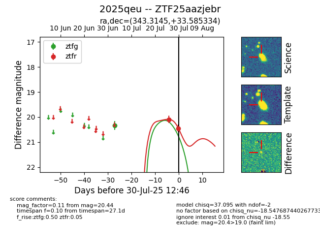

Target 2025qeu at 2025-07-30 12:46, see:
FINK: fink-portal.org/2025qeu
Lasair: lasair-ztf.lsst.ac.uk/objects/2025qeu
ALeRCE: alerce.online/object/2025qeu
TNS: wis-tns.org/object/2025qeu
YSE: ziggy.ucolick.org/yse/transient_detail/2025qeu
alt names
ZTF25aazjebr (ztf,fink)
2025qeu (tns,yse)
coordinates:
equatorial (ra, dec) = (343.3145,+33.58533)
galactic (l, b) = (96.4007,-23.12688)
photometry
last ztfg=20.34, ztfr=20.44
1 ztfg, 2 ztfr detections
